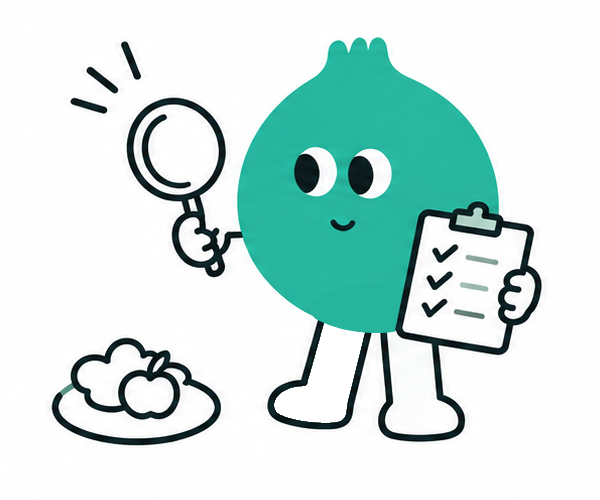
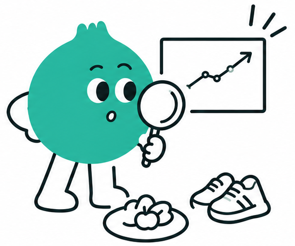
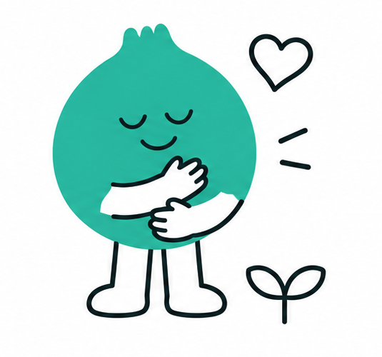
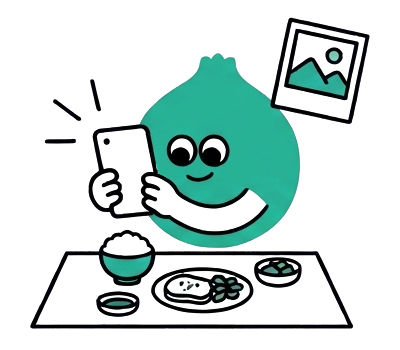
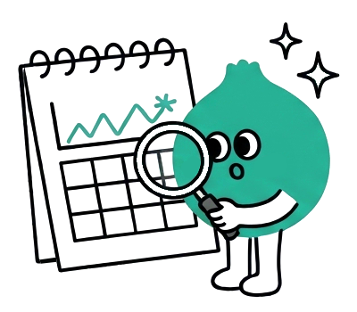
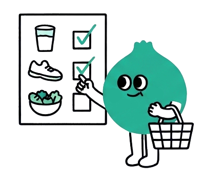
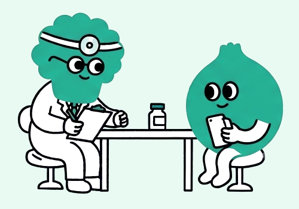

고민 1
“식단 기록은 오래 못 가요.
매번 적는 게 귀찮거든요”
먹기 전에 사진 한 장,
뭘 먹었는지 AI가 정리해요
음식 이름을 하나하나 입력할 필요 없고, 잘못 인식한 음식은 직접 수정할 수 있어요.
나 같은 사람들
“멀쩡히 살다 건강검진에서 LDL 172를 받고 멘붕이었어요. 의사 선생님과 상의해서 식단부터 바꿔 보는 중이에요”
“20대부터 LDL이 200을 넘었어요. 가족력이라 치료 받으면서도, 내 노력이 조금이라도 보탬이 되는지 확인하고 싶어요”
“약 부작용으로 두 달간 고생하며 힘든 시간을 보냈어요. 지금은 의사와 상의하면서 식단과 운동으로 관리하고 있어요”
공통된 마음

내 상태와 생활에 맞춰
생활을 바꾸면 뭐가 달라지는지
내 건강을고민과 해결
고민 1
“식단 기록은 오래 못 가요.
매번 적는 게 귀찮거든요”
음식 이름을 하나하나 입력할 필요 없고,
잘못 인식한 음식은 직접 수정할 수 있어요.
고민 2
“모임이나 회식이 있는 날은
기록하기가 부담스러워요”
내가 정한 기준을 지킨 날만 달력에 표시하고,
기록하기 어려웠던 날은 메모로 남길 수 있어요.
고민 3
“재검 결과만 봐서는
지난 8주를 돌아보기 어려워요”
내 식습관과 생활습관을 돌아보고,
이어 갈 습관과 진료 때 여쭤볼 질문을 정리해요.
기억에만 맡겼던 한 끼를
사진으로 돌아봐요.

회식이나 모임 있는 날은
내가 어떻게 먹는지 알아가요.

잘 맞았던 건 이어 가고,
버거웠던 건 바꿔 봐요.

내식대로는 질병을 진단하거나 수치가 변한 이유를 판단하지 않아요.
식단과 생활습관, 검사 결과를 정리해 진료 때 의사와 상담할 수 있도록 도와드려요.
드시던 약은 임의로 끊지 말고, 진료 일정도 그대로 지켜 주세요.

아니요. 약과 치료는 의사와 정할 일이에요. 내식대로는 진료 때 여쭤볼 질문을 미리 적어 둘 수 있게 도와요.
네. 약 복용 전이든 복용 중이든, 식단 중심으로 생활습관을 관리하려는 분이라면 참여할 수 있어요.
아니요. 사진 한 장, 한 줄 메모, 루틴 버튼 중 그날 편한 방법으로 남기면 돼요.
아니요. 실천 기록이 기준이에요. 8주 중 6주 이상, 주 4일 이상 기록하면 재검 결과와 상관없이 18,000원 전액을 돌려드려요.
월 9,000원씩 2개월이에요. 지금은 신청만 받고, 참여가 확정되면 시작 전에 결제 방법과 일정을 이메일로 안내해 드려요.
40~50대 여성을 중심으로 만들었지만, 누구나 신청할 수 있어요.
사전 신청 때 받은 정보(이름, 이메일, 재검 예정 시기, 식습관)는 신청 안내와 서비스 운영에만 써요. 베타테스트가 끝나면 3개월까지 보관한 뒤 지체 없이 파기하고, 참여하지 않기로 하신 경우에는 모집 마감 후 1개월 안에 파기해요.
내식대로는 사전 신청 접수 및 안내를 위해 개인정보를 수집 및 이용합니다.
나 같은 사람들
“멀쩡히 살다 건강검진에서 LDL 172를 받고 멘붕이었어요. 의사 선생님과 상의해서 식단부터 바꿔 보는 중이에요”
“20대부터 LDL이 200을 넘었어요. 가족력이라 치료 받으면서도, 내 노력이 조금이라도 보탬이 되는지 확인하고 싶어요”
“약 부작용으로 두 달간 고생하며 힘든 시간을 보냈어요. 지금은 의사와 상의하면서 식단과 운동으로 관리하고 있어요”
공통된 마음
내 상태와 생활에 맞춰
관리하고 싶은 마음
생활을 바꾸면 뭐가 달라지는지
확인하고 싶은 마음
내 건강을
스스로 챙기고 싶은 마음
고민과 해결
고민 1
“식단 기록은 오래 못 가요.
매번 적는 게 귀찮거든요”
음식 이름을 하나하나 입력할 필요 없고, 잘못 인식한 음식은 직접 수정할 수 있어요.
고민 2
“모임이나 회식이 있는 날은
기록하기가 부담스러워요”
내가 정한 기준을 지킨 날만 달력에 표시하고, 기록하기 어려웠던 날은 메모로 남길 수 있어요.
고민 3
“재검 결과만 봐서는
지난 8주를 돌아보기 어려워요”
내 식습관과 생활습관을 돌아보고, 이어 갈 습관과 진료 때 여쭤볼 질문을 정리해요.
기억에만 맡겼던 한 끼를
사진으로 돌아봐요.
회식이나 모임 있는 날은
내가 어떻게 먹는지 알아가요.
잘 맞았던 건 이어 가고,
버거웠던 건 바꿔 봐요.
내식대로는 질병을 진단하거나 수치가 변한 이유를 판단하지 않아요. 식단과 생활습관, 검사 결과를 정리해 진료 때 의사와 상담할 수 있도록 도와드려요.
드시던 약은 임의로 끊지 말고, 진료 일정도 그대로 지켜 주세요.
참가비는 샐러드 한 접시 값
월 9,000원 × 2개월
실천 목표를 채우면
18,000원 전액을 돌려드려요
재검 수치와 관계없이, 내가 실천한 기록 기준
사전 신청하신 분께 드려요
40대 직장인의 8주 기록
식단·생활습관·재검 결과 건강 기록지를 이메일로 보내드려요.
아니요. 약과 치료는 의사와 정할 일이에요. 내식대로는 진료 때 여쭤볼 질문을 미리 적어 둘 수 있게 도와요.
네. 약 복용 전이든 복용 중이든, 식단 중심으로 생활습관을 관리하려는 분이라면 참여할 수 있어요.
아니요. 사진 한 장, 한 줄 메모, 루틴 버튼 중 그날 편한 방법으로 남기면 돼요.
아니요. 실천 기록이 기준이에요. 8주 중 6주 이상, 주 4일 이상 기록하면 재검 결과와 상관없이 18,000원 전액을 돌려드려요.
월 9,000원씩 2개월이에요. 지금은 신청만 받고, 참여가 확정되면 시작 전에 결제 방법과 일정을 이메일로 안내해 드려요.
40~50대 여성을 중심으로 만들었지만, 누구나 신청할 수 있어요.
사전 신청 때 받은 정보(이름, 이메일, 재검 예정 시기, 식습관)는 신청 안내와 서비스 운영에만 써요. 베타테스트가 끝나면 3개월까지 보관한 뒤 지체 없이 파기하고, 참여하지 않기로 하신 경우에는 모집 마감 후 1개월 안에 파기해요.
내식대로는 사전 신청 접수 및 안내를 위해 개인정보를 수집 및 이용합니다.